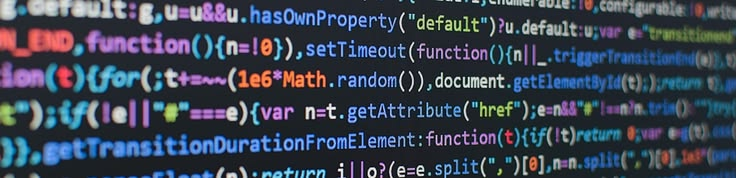

Programmer
La compétence Programmer regroupe les travaux réalisés cette année autour du développement et de l'automatisation. Durant cette année de formation, la programmation s'est principalement articulée autour du langage Python, utilisé avant tout comme un outil d'automatisation et d'interaction avec des systèmes existants plutôt que comme fin en soi.
Au-delà de la maîtrise technique des bibliothèques et des langages, ces projets ont mis en évidence l'importance de la qualité du code : lisibilité, structuration et respect des bonnes pratiques sont des exigences indissociables du développement.
SAE302 - Développer des applications communicantes
Cette SAÉ individuelle consistait à développer en Python 3 une application web permettant de rechercher des mots-clés dans des documents de formats variés : fichiers texte, HTML, PDF et Excel. L'application repose sur un serveur Flask qui traite les requêtes des clients et retourne les résultats de recherche enrichis, en indiquant pour chaque occurrence le nom du fichier, le numéro de ligne et le contexte autour du mot trouvé.
Pour gérer les différents formats de fichiers, j'ai utilisé plusieurs bibliothèques spécialisées : pdfplumber pour l'extraction
de texte depuis les PDF, BeautifulSoup pour le parsing HTML, pandas et openpyxl pour la lecture
des fichiers Excel. L'ensemble du projet est disponible sur GitHub et accompagné d'un fichier README.md et d'un
requirements.txt pour faciliter son installation et sa prise en main.
La principale difficulté de ce projet n'était pas tant technique que méthodologique : maintenir un code cohérent et lisible sur un projet plus grand que ce que j'avais l'habitude de produire. C'est la première fois que j'ai vraiment dû structurer mon travail en fonctions claires, nommer mes variables avec soin, éviter les valeurs constantes en dur dans le code et rédiger des docstrings pour chaque fonction. Respecter la norme PEP 8 m'a demandé un effort conscient et continu, mais c'est précisément ce projet qui m'a fait comprendre que la qualité d'un code ne se mesure pas uniquement à ce qu'il fait, mais aussi à la facilité avec laquelle un autre développeur peut le lire et le comprendre.
Avec le recul, ce projet m'a apporté une vraie rigueur dans ma façon d'écrire du code, une compétence que je considère aussi importante que la maîtrise des bibliothèques ou des langages eux-mêmes.